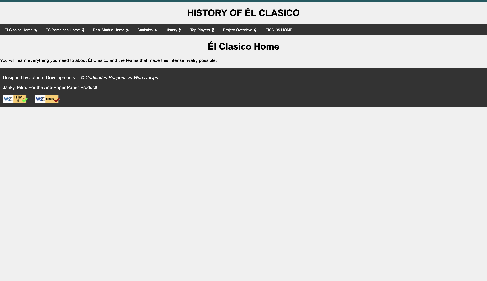

Peer Review for Thornton John
- General Submission Requirements:
- The page links directly to the review or includes a primary page with links: Yes
- No spaces or uppercase letters in file/folder names (scripts, images, etc.): Yes
- Design:
- Sufficient contrast and font sizing for readability: Yes, the site uses colors that are easy on the eyes. However a football or something like that in the header to fit the asthetic as text just seems basic.
- Page uses consistent site colors and fonts via a standard `.css` file: Yes
- CRAP principles are followed: Yes at the time of this review the content is not all there yet. However, he has filled out some section my only issue may be a different type of font that catches the eyes more. Regardless CRAP principles are being followed throughout the webpages.
-
Main Content:
- Main starts with the name of the page in an `h2` (not the site/brand name): Yes
-
Footer:
- Footer includes a menu linking to the user’s pages: Yes
- Page does include Accumulus for HTML & CSS Validation!
- Additional Feedback:
- Stop: Using basic colors as I know your creativity. I've seen some of your other work and know you have some better color schemes up your sleeve.
- Start: Better Spacing of nav elements in your header, maybe changing the divider to a football could be cool!
- Continue: Your work as you defintley have an intresting client project definitley want to see more pictures.
Reviewed By: Moeez Awan 11/28/24